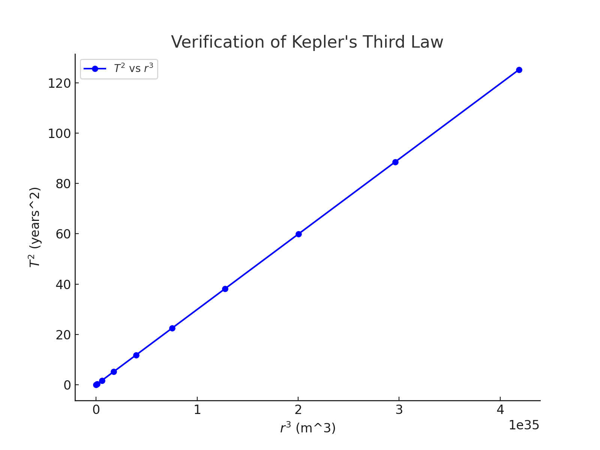
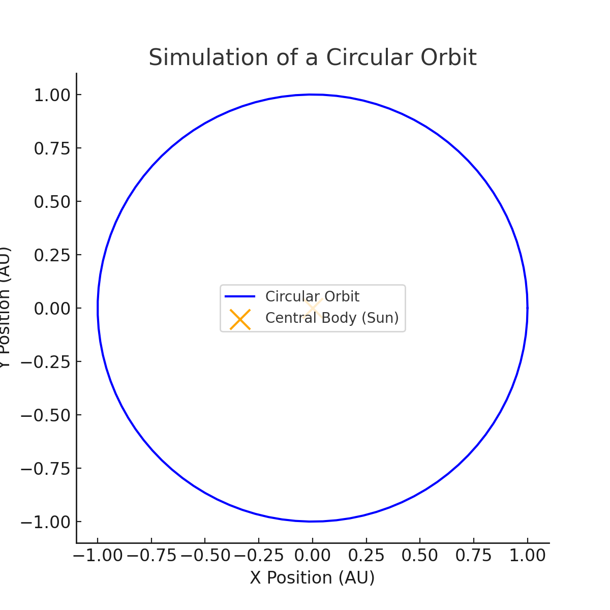

Problem 1
Orbital Period and Orbital Radius
Motivation
Kepler's Third Law states that the square of the orbital period \(\(T\)\) of a planet is proportional to the cube of the semi-major axis (orbital radius) \(\(r\)\) of its orbit. Mathematically:
This fundamental relationship allows us to: - Predict planetary motions - Calculate planetary masses and distances - Understand gravitational interactions in celestial mechanics
1. Derivation of the Relationship
To derive Kepler's Third Law, we start with Newton’s Law of Gravitation:
where: - \(\(G\)\) is the gravitational constant, - \(\(M\)\) is the mass of the central body, - \(\(m\)\) is the mass of the orbiting object, - \(\(r\)\) is the orbital radius.
For circular orbits, the centripetal force is provided by gravity:
Equating gravitational force to centripetal force:
Canceling \(\(m\)\) and rearranging:
The orbital period is given by:
Substituting \(\(v\)\):
Squaring both sides:
Thus, we arrive at Kepler's Third Law:
2. Implications for Astronomy
Kepler's Third Law is crucial in: - Determining planetary masses and distances using observed orbital periods - Satellite and spacecraft navigation - Studying exoplanetary systems
Real-World Examples
- Moon's Orbit Around Earth:
- Period: \(\(T_{moon} \approx 27.3\)\) days
- Radius: \(\(r_{moon} \approx 3.84 \times 10^5\)\) km
- Planets in the Solar System:
- For Earth: \(\(T = 1\)\) year, \(\(r = 1 AU\)\)
- For Mars: \(\(T = 1.88\)\) years, \(\(r = 1.52 AU\)\) (follows \(\(T^2 \propto r^3\)\))
3. Computational Simulation of Circular Orbits
Below is a Python script that simulates circular orbits and verifies Kepler's Third Law:
import numpy as np
import matplotlib.pyplot as plt
from scipy.constants import G
# Constants
M_sun = 1.989e30 # Mass of the Sun in kg
AU = 1.496e11 # 1 Astronomical Unit in meters
# Function to compute orbital period
def orbital_period(r, M):
return 2 * np.pi * np.sqrt(r**3 / (G * M))
# Orbital radii in AU
radii_AU = np.linspace(0.1, 5, 10)
radii_m = radii_AU * AU
# Compute periods
periods = orbital_period(radii_m, M_sun) / (60 * 60 * 24 * 365) # Convert to years
# Plot T^2 vs r^3
plt.figure(figsize=(8,6))
plt.plot(radii_m**3, periods**2, 'bo-', label='$T^2$ vs $r^3$')
plt.xlabel('$r^3$ (m^3)')
plt.ylabel('$T^2$ (years^2)')
plt.title('Verification of Kepler\'s Third Law')
plt.legend()
plt.grid()
plt.show()

4. Extension to Elliptical Orbits
Kepler's Third Law also applies to elliptical orbits, where:
-
\[r$$ is replaced by the **semi-major axis** $$a\]
- The relationship still holds: \(\(T^2 \propto a^3\)\)
This generalization allows for: - Understanding cometary orbits (e.g., Halley's Comet) - Studying binary star systems - Determining galactic dynamics

Conclusion
- Kepler's Third Law provides a direct link between orbital periods and radii.
- It helps predict planetary motions and system dynamics.
- Computational models confirm the theoretical relationship.
- The law extends to elliptical orbits and cosmic scales.
References
- Kepler, J. Astronomia Nova (1609)
- Newton, I. Principia Mathematica (1687)
- NASA Planetary Data